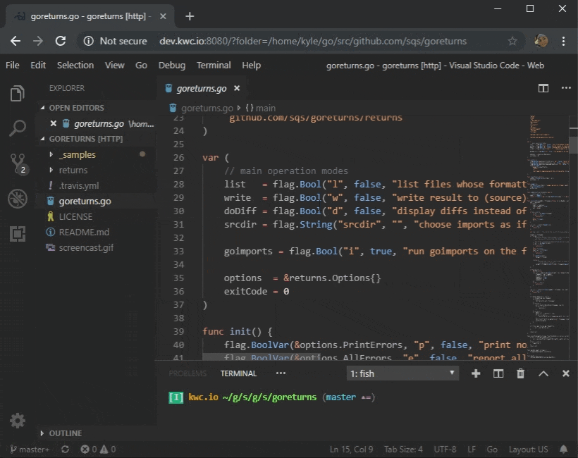

2019-10-21 23:39:00
구글 클라우드에서 돌아가는 toy project가 있어서 오랜만에 유지보수를 하려니, SDK 설치부터 너무 힘들었다. 그래서 좀 뒤져보다 보니, google에서도 Cloud Shell을 제공하고 있었고, Cloud Shell에는 이미 SDK 및 관련 툴들이 이미 설치되어 있어서 개발 환경을 구축할 필요없이 바로 개발을 이어갈 수 있었다.
하지만 파일 편집 환경이 너무 불편해서 좀 더 찾아보니, Cloud Shell안에서 VS Code를 웹 서버로 띄워서 사용할 수 있다고 한다. https://medium.com/google-cloud/how-to-run-visual-studio-code-in-google-cloud-shell-354d125d5748 에서 해당 내용을 확인할 수 있다.
정리하자면 아래와 같다.
- https://github.com/cdr/code-server/ 라는 프로젝트가 VS Code를 웹 서버로 띄울 수 있도록 해준다
- Google Cloud Shell 안(!)에서 해당 프로젝트를 다운 받아서 압축을 해제한 후 실행한다. 그러면 8080를 통해서 VS Code를 서비스해준다
Google Cloud Shell의 Web Preview 기능을 통해서 해당 포트를 연결하는 주소를 생성해주고 해당 주소를 통해서 VS Code 서비스에 접속해서 사용한다
- 혹시나 'Not Found' 같은 오류가 난다면, 주소줄에서 xxxx.appspot.com 이후의 문자열들을 삭제한 주소로 접속하면 된다
재미있는 것은 이렇게 열린 VS Code in WebBrowser를 통해서, Google Cloud Shell도 열 수가 있다는 것이다. 뭔가 현대적인 클라우드 컴퓨팅을 사용한다는 느낌이 팍팍 든다.
